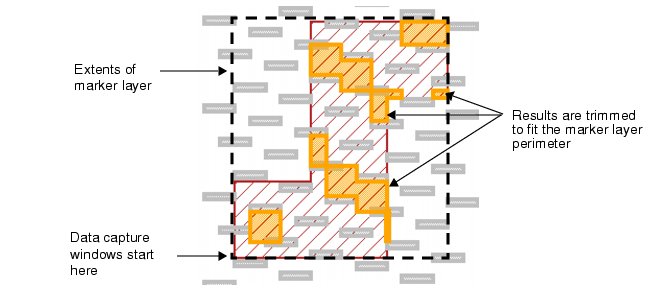
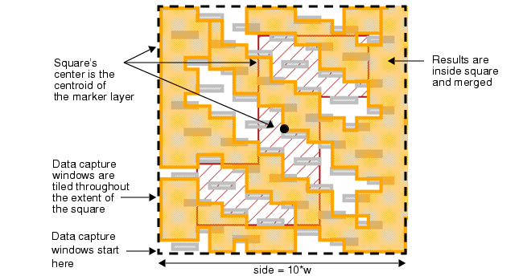
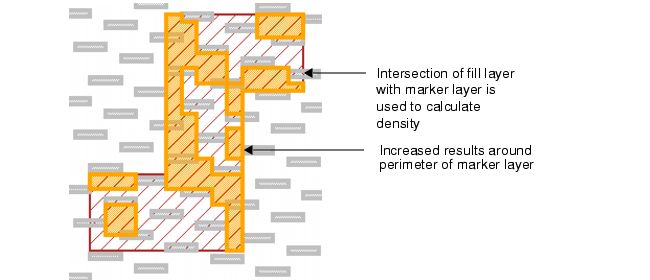
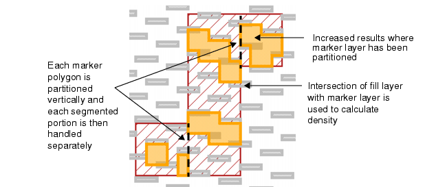

In general, the
use of Density INSIDE OF LAYER option is discouraged for performance reasons.
Using the other methods shown in this chapter is preferred for most
situations. However, if you choose to use INSIDE OF LAYER, this
section discusses the main variants of this option.
The d, w, and s parameters shown in this procedure
can be chosen for your process and set up as variables in the rule
file.
Procedure
- Write a Density check using
the INSIDE OF LAYER option, as follows:
filldensity = DENSITY fill < d WINDOW w STEP s
INSIDE OF LAYER marker
RDB filldensity.rdb
filldensity {
@ Density fill < ^d INSIDE OF LAYER marker
COPY filldensity
}
This finds the density of
the fill layer inside of the marker layer.
- Highlight the results of the
filldensity rule check in Calibre RVE. The results might appear
as follows:
Figure 1. Density INSIDE OF
LAYER marker
The Density window grid starts
at the basepoint of the extents of the marker layer polygons. Results
are just those regions that intersect the marker layer.
- Change the rule check from
Step 1 to include the CENTERED option, as follows:
filldensity = DENSITY fill < d WINDOW w STEP s
INSIDE OF LAYER marker CENTERED 10*w
RDB filldensity.rdb
filldensity {
@ Density fill< ^d INSIDE OF LAYER marker CENTERED 10*w
COPY filldensity
}
The CENTERED option determines
the centroid of each marker layer polygon. Then a square is constructed
of side length equal to the CENTERED argument (in this case, 10 times
the window width). The center of the square is the centroid of the
marker layer polygon. The square is then used as the region for
tiling the data capture windows.
- Highlight the results of the
filldensity rule check in Calibre RVE. The results might appear
as follows:
Figure 2. Density INSIDE OF
LAYER marker CENTERED
Compare Figure 2 and Figure 1.
- Change the rule check from
Step 1 to include the BY POLYGON option, as follows:
filldensity = DENSITY fill < d WINDOW w STEP s
INSIDE OF LAYER marker BY POLYGON
RDB filldensity.rdb
filldensity {
@ Density fill< ^d INSIDE OF LAYER marker BY POLYGON
COPY filldensity
}
The BY POLYGON option causes
the intersection of the fill and marker layers to be taken first,
and then the INSIDE OF LAYER option proceeds as in Figure 1.
- Highlight the results of the
filldensity rule check in Calibre RVE. The results might appear
as follows:
Figure 3. Density INSIDE OF
LAYER marker BY POLYGON
The main effect of BY POLYGON
is to increase results around the perimeter of the marker layer
in comparison to INSIDE OF LAYER by itself. Compare Figure 3 with Figure 1.
- Change the rule check from
Step 5 to use the BY RECTANGLE option, as follows:
filldensity = DENSITY fill < d WINDOW w STEP s
INSIDE OF LAYER marker BY RECTANGLE
RDB filldensity.rdb
filldensity {
@ Density fill< ^d INSIDE OF LAYER marker BY RECTANGLE
COPY filldensity
}
The BY RECTANGLE option first
vertically partitions the marker layer polygons into trapezoids
and triangles. Then, for each trapezoid or triangle, the BY POLYGON behavior
proceeds as in Figure 3.
- Highlight the results of the
filldensity rule check in Calibre RVE. The results might appear
as follows:
Figure 4. Density INSIDE OF
LAYER marker BY RECTANGLE
BY RECTANGLE causes each segmented
portion of the original marker polygon to be treated individually
as a separate marker polygon. Then the BY POLYGON algorithm is used.
Compare Figure 4 and Figure 3 to see the differences between BY RECTANGLE
and BY POLYGON.
Results
You can adjust the Density constraint,
WINDOW, and STEP values to optimize your results presentation.